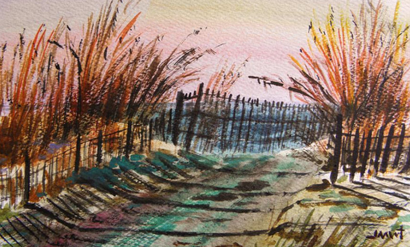

Logan's website
how are you? i am good i hope you are doing good to! how are you? i am good i hope you
are doing good to!
-
i am doing good today
-
this is fun
In 1899, the coastal road from Honolulu Harbor to Waikīkī, formerly called the “Beach Road,” was renamed “Ala
Moana.”
"At the beginning of the twentieth-century, this stretch of coast makai of Ala Moana Boulevard was the site of
the Honolulu garbage dump, which burned almost continually."

in 1931 The City and County of Honolulu started cleaning up the Ala Moana area.
In 1933, Harry Sims Bent was chosen as the park architect for the City and County of Honolulu. Bent’s design
went beyond the modern level and into the realm of art deco, allowing for play, as well as contact with nature.
His works at Ala Moana include the canal bridge, entrance portals, sports pavilion, banyan courtyard and the
lawn bowling green.
President Roosevelt participated in the dedication of the new 76-acre "Moana Park" in 1934 (it was later renamed
Ala Moana Park in 1947.)
In 1958, a 20-page booklet was sent to Congress to encourage them to turn back Ala Moana Reef to the Territory
of Hawaiʻi for the construction of a "Magic Island."
It was supposed to be part of a new high scale beachfront resort complex with a half-dozen hotels that would
have included two islands built on the fringing reef, offshore of the Ala Moana Park.
There is good reason to fear Ala Moana Park may be wiped out entirely so far as the people of Oahu are concerned
if they don't keep alert and guard" against every effort to encroach upon it. (Honolulu Record, May 15, 1958)
in 1964 a 30-acre peninsula, with “inner” and “outer” beaches for protected swimming, was constructed adjoining
the Ala Wai Small Boat Harbor and Ala Wai Canal outlet.
The project stopped after the development of “Magic Island,” leaving the State with a man-made peninsula, which
they converted into a public park.
In 1972 the State officially renamed Magic Island to ‘Āina Moana (“land [from the] sea”) to recognize that the
park is made from dredged coral fill. The peninsula was turned over the city in a land exchange and is formally
known as the ‘Āina Moana Section of Ala Moana Beach Park, but many local residents still call it Magic Island.